カテゴリ: ねこ
-
猫の居る休憩所＠池袋
猫好きなのに、初猫カフェ。 おまけの、はるな愛。タイフードマーケット＠池袋西口に来てた。
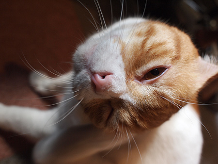
-
はさまれ猫
かわええ 猫ってなんでこーもおっちょこちょいなのか。 挟まれたり、落っこちたり、高いトコから降りられなくなったり。 まーそこが可愛いんだけどね。 実家で飼っていたねこも、近所の倉庫に忍び込んで出ら…
-
ブーちゃんとわたくし
最近、ネコのブーちゃんと仲良くしてます。 実際には黒々としたでっかい黒猫。 太っているメタボ系の猫ではなくて、こーゆー種類かっ！…と納得できるような骨格からの大きさで、 ふつーの猫がチワワだとし…
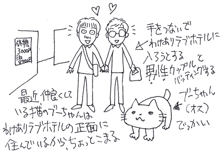
-
かいーの
かいーの すっごくかいーーの

-
猫がまねく
今日会った猫さん。 なでさせてくれるけど、ぜーんぜんこっち向いてくんないの。 「まこ」ちゃんにそっくり 毛並みはふわふわのほあほあ そそくさとお店にはいっちゃった。 ここの店のコなのかなー。 こ…
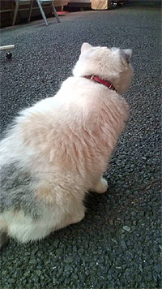
-
猫だまり
夕方。猫だまりに遭遇。 みんなちょっとだけ警戒。 ここにお住まいのようです ミケを思い出しちゃう。元気にしてるかなぁ… 遊んでくれる仲良し猫をさがさなくては… 毎日来れば顔を覚えてく…
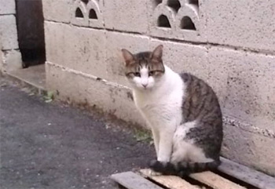
-
新着ねこ届きました
叔母のとこの新着ねこ。 子猫たまらん。 なんだこのポーズ。アチョー！ 管理サイトで貼っていたamazonのアフィリエイトがいつのまにやら貯まっていました。 中学生の小遣いのよーな金額なのですが、放置…
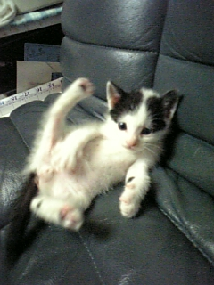
-
aoさま
保護者さんから里親募集のポスターが届いたので掲載します！ -------------&#…
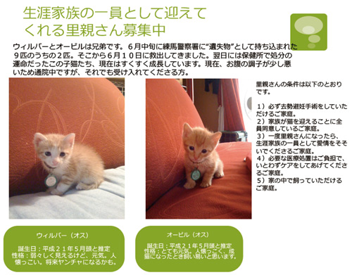
-
>井上さん改めエモロイド さま
ウチに通勤している唯一のスタッフ。ミケ。 仕事内容は ・寝る ・食べる ・鳴く 勤務時間は不定期で、朝からいるときもあれば、しばらく来なかったり。 超自由。いまどきのフリーター猫なわけですが、本名…
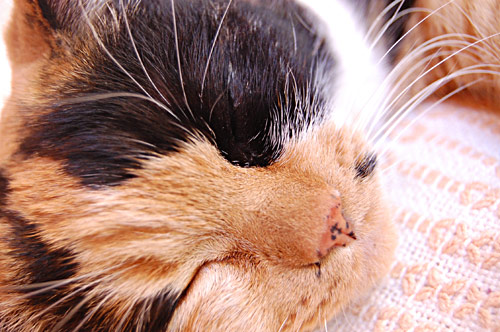
-
こねこをみた
猫と犬って遊び方がぜんぜん違うから見ていて面白い。 子犬はずーっと毛布のひっぱりっこ 子猫はずーっと高いとこに座って、目の前を通る犬をちょいちょい かわいいなー
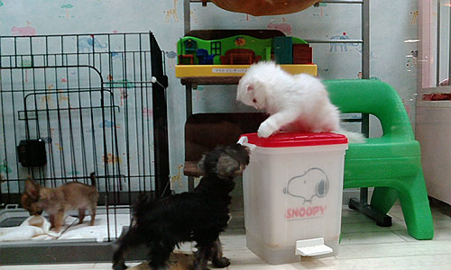
-
＞井上さま
なぞの入り浸りネコ「ミケ」 朝来て、昼来て、おやつに来て、夜に来る。 首輪をしていてそこそこ毛艶が良いから、どこかに本宅があると思われるのだがなぁ～… エサくれ攻撃がすさまじい。
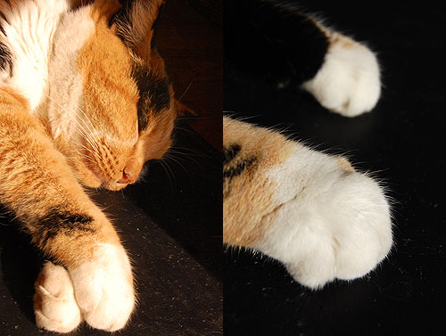
-
元気だった
行きつけのお蕎麦屋さんの近くにいるフクロウちゃん。 一年近く会っていなかったから、もういないかなーと思ったら、いた！ わー。元気だったのねー 頭なでなで。 すんごいフワフワ。

-
応挙とミケ
応挙が今パリに行っているみたい。羽田にあった看板。 フランスのヒトは日本好きだなー。 でもこの虎はかわいいなー。にゃーんって感じ。 このヒトっぽい。 なんか寒くなってふわふわもこもこしたものが恋し…

-
絵になるねこ
デザイナーさんとこのねこ。 なんとも雰囲気を持ったねこちゃんだけど、ソファーばりばり、机に乗ったり、印刷屋さんにすりすりしたりと、なんともやんちゃ。 でも仕事で伺うたびに癒されちゃうのでした
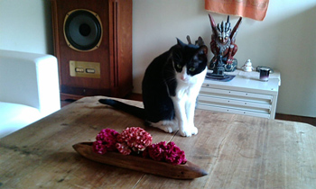
-
ぶれねこ
近所（いまの仮住まい）のねこ すりすりしすぎて撮れないよー
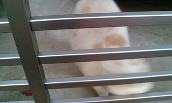
-
はじめまして！
にゃんにゃんにゃんで猫の日ですな。 とゆーわけで、「にゃん」「にゃん」「にゃん」と3匹写真。 一匹隠れてますが。
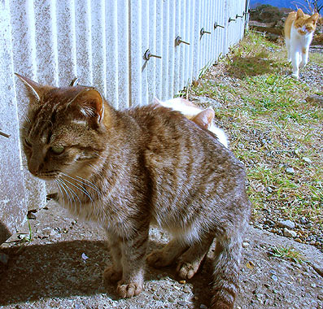
-
猫の買い物
あまりにも可愛く不思議なニュースなので。 定期的にバスに乗ってフィッシュ＆チップスの店の近くで降りるとゆー猫（イギリス）。 青と緑の目を持つオッドアイの白猫ちゃんですね。 賢い猫って、とんでもなく人…
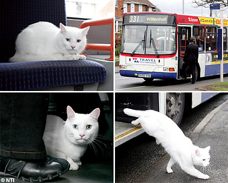
-
春の猫
ガード下に猫 「わー！猫～！」…と近寄ろうとしたら、手前にあった鎖の柵に足を引っ掛けて慌てたもんだから、猫警戒。 手を出してチョッチョッチョ…としたらフー！！って言われてしまったのでした。 しか…